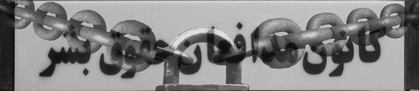

|
|
پلمب دفتر کانون مدافعان حقوق بشر و جلوگیری از برگزاری مراسم بزرگداشت روز جهانی حقوق بشر
يكشنبه1 دی 1387

تغییر برای برابری : ماموران پلیس امنیت و پلیس کلانتری یوسف آباد دقایقی پیش با یورش به دفتر کانون مدافعان بشر اقدام به پلمب این مکان کردند.
قرار بود امروز اول دی ماه، ساعت 4 بعد از ظهر مراسمی به مناسبت بزرگداشت روز جهانی حقوق بشر در کانون مدافعان برگزار شود که از برگزاری این مراسم نیز ممانعت به عمل آمده است .
به گزارش افراد حاضر در محل در حال حاضر ماموران مشغول پلمب دفتر کانون هستند و برخورد بدی نیز با اعضای کانون مدافعان حقوق بشر داشته اند. گزارش های رسیده حاکی از برخورد فیزیکی و خشونت بار با آقای اسماعیل زاده و خانم نرگس محمدی است و خانم عبادی هم در دفتر کانون حضور دارند.
گفته می شود ماموران کارت شناسایی ارائه نکرده و تنها به برخورد با اعضای کانون و پلمب این دفتر اقدام کرده اند.
خبر تکمیلی : پلمب دفتر کانون مدافعان بشر
ژینوس سبحانی عضو کمیته زنان و کودکان کانون مدافعان حقوق بشر در گفتگو با تغییر برای برابری ضمن تایید خبر پلمب دفتر کانون گفت:" به دلیل عدم حضور خانم عبادی در ایران در روز جهانی حقوق بشر، قرار بود ساعت 16:30 عصر امروز مراسمی به همین مناسبت در کانون مدافعان حقوق بشر برگزار شود. تعدادی از اعضای کانون مدافعان از ساعت 15 امروز به منظور فراهم کردن مقدمات برنامه در محل کانون حاضر شده بودند که خانم نرگس محمدی وارد شده و اطلاع دادند که تعداد زیادی از ماموران در مقابل کانون حضور دارند. بعد از دقایقی تعدادی از ماموران وارد ساختمان شده و قصد ورود به دفتر کانون را داشتند که خانم محمدی با آنها صحبت کردند و حکم ورود به دفتر را خواستند و به دلیل عدم ارائه حکم ورود به دفتر کانون مدافعان در را بستیم و از داخل قفل کردیم. بعد از دقایقی مجددا ماموران مراجعه کرده و گفتند شماره حکم داریم و حکم از طرف مقام قضایی رسمی صادر شده است. اما به دلیل عدم حضور خانم عبادی و نیز ارائه حکم مکتوب از باز کردن در خودداری کردیم ."
سبحانی همچنین از حضور تعداد زیادی از ماشین های نیروی انتظامی و افراد شخصی و ملبس پلیس امنیت در مقابل درب کانون خبر داد که حاضرین را متفرق می کردند و گفت: " در جریان این برخورد یکی از این ماموران به خانم محمدی توهین کرده و با الفاظ بسیار تند با ایشان صحبت کردند. همچنین ماموران که تعدادشان بسیار زیاد بود و تعدادی از نیروهای لباس شخصی هم با دوربین فیلمبرداری در محل حاضر بودند با آقای اسماعیل زاده، از اعضای کانون مدافعان حقوق بشر برخورد فیزیکی کرده و ضمن ضرب و شتم تلفن همراه وی را نیز گرفتند."
این عضو کانون مدافعان حقوق بشر ادامه داد: "درنهایت پس از حضور خانم عبادی، با اعلام این که می خواهیم مسالمت آمیز صحبت کنیم به دفتر کانون وارد شدند و پس از گذشت یک ساعت ماموران در حالی که از دفتر فیلمبرداری می کردند، بدون تنظیم هیچ گونه صورت جلسه ای همه اعضای کانون مدافعان حقوق بشر را از دفتر کانون خارج کرده و اقدام به پلمب نهایی کردند."
سبحانی همچنین گفت تا این لحظه هیچ یک از اعضای کانون در جریان این برخورد بازداشت نشده اند.